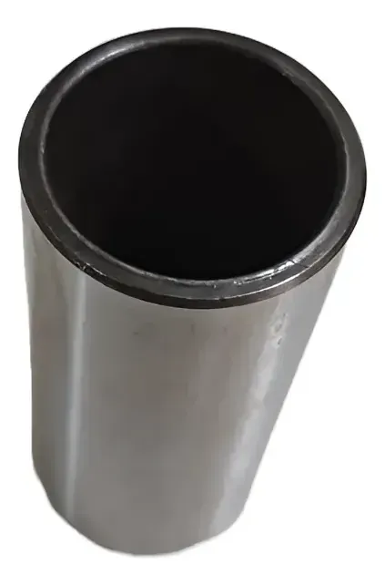

Peça de alta qualidade utilizada no sistema de válvulas do motor, garantindo funcionamento suave, redução de ruído e maior durabilidade do conjunto mecânico.
Compatível com caminhões, ônibus e aplicações industriais Mercedes-Benz que utilizam esses motores.
COMPRAR NO MERCADO LIVRE